Retour d'expérience personnel sur l'usage d'un NVIDIA DGX Spark (GB10) comme socle d'« edge computing » d'IA à domicile : servir des LLM en local (Ollama / Open WebUI), exposer une API sans ouvrir de port (Cloudflare Tunnel) et s'y connecter en privé (Tailscale), trier ses documents par IA (Sortify, Qwen3.6:35b), coder avec les modèles locaux dans tous ses éditeurs (Claude Code, OpenCode, KiloCode, Xcode), et augmenter un miroir connecté qui voit, écoute, comprend et se pilote au geste — le tout sans qu'aucune donnée personnelle ne quitte la maison.
Mots-clés : DGX Spark --- Edge AI --- Agentic --- Dev local (Claude Code · OpenCode · Xcode) --- Domotique --- Privacy --- Ollama --- Tailscale --- Cloudflare
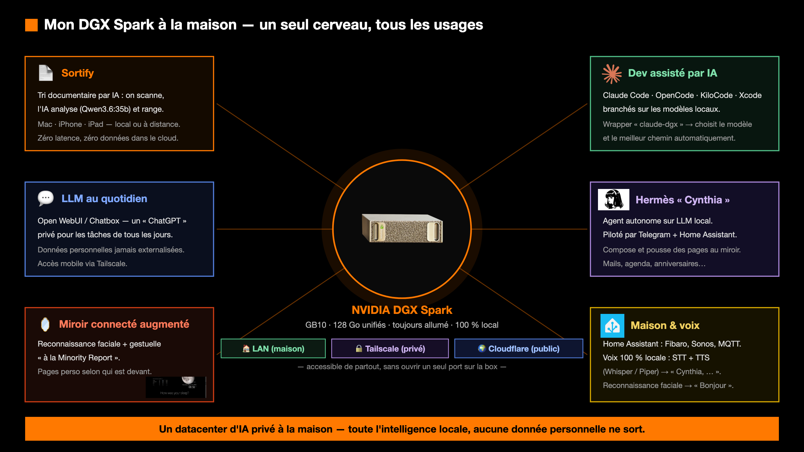
En un coup d'œil — le DGX au centre, ses usages (documents, LLM, dev, miroir, agent, maison) et les voies d'accès (LAN · Tailscale · Cloudflare). Le détail dans les sections ci-dessous.
1. Le pari : un datacenter d'IA privé à la maison
Ce document est un retour d'expérience personnel. Il raconte comment un NVIDIA DGX Spark — une petite machine d'IA posée à la maison — est devenu le cœur d'un écosystème domestique : un serveur de modèles de langage, un agent autonome, un hub domotique, et un miroir connecté qui voit, écoute et comprend. Le tout en restant fidèle à un principe simple : les données personnelles ne quittent pas la maison.
Le fil rouge est celui de l'edge computing appliqué au foyer. Plutôt que d'envoyer ses documents, ses conversations et l'image de son salon vers un cloud, on rapatrie le calcul là où vivent les données. Le DGX Spark rend ce pari tenable : il est assez puissant pour faire tourner des modèles de 30 à 70 milliards de paramètres, de la vision par ordinateur et de la synthèse vocale en même temps, et assez sobre pour rester allumé en permanence dans un appartement.
Il se veut lisible par des passionnés (l'architecture et les pièges techniques y sont) comme par un public curieux (chaque brique est expliquée par ce qu'elle apporte, pas seulement par sa mécanique). C'est le rapport détaillé d'une présentation plus synthétique préparée pour le meetup « Agentic in a Box » (TechUp, avec NVIDIA et Orange).
2. Le matériel : NVIDIA DGX Spark (GB10)
Le DGX Spark est bâti autour de la superpuce GB10 Grace Blackwell (un CPU Arm et un GPU Blackwell sur le même paquet) et de 128 Go de mémoire unifiée partagée entre le CPU et le GPU. Cette mémoire unifiée est la clé : il n'y a pas à copier les données d'un espace « CPU » vers un espace « GPU ». Un seul réservoir accueille le modèle de langage, les modèles de vision et l'agent — qui cohabitent sans se marcher dessus.
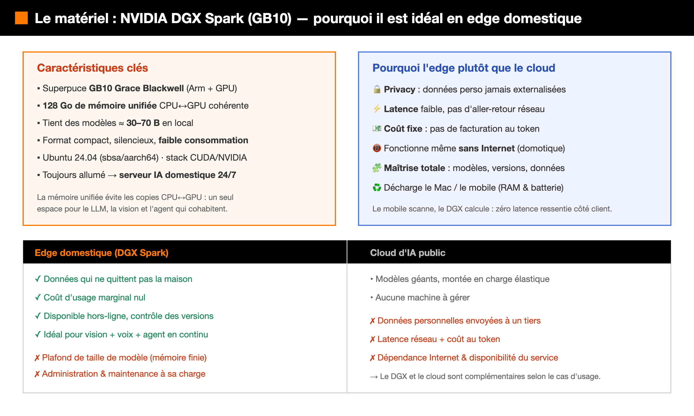
Figure 1 — Le GB10 et pourquoi l'edge domestique a du sens face au cloud.
Concrètement, pour un usage domestique, trois propriétés comptent plus que les chiffres bruts : la machine est compacte et silencieuse, elle consomme peu, et elle est toujours allumée. Elle devient de fait un serveur d'IA domestique 24/7 : le mobile et le Mac lui délèguent les tâches lourdes et restent légers.
3. Architecture d'ensemble
Avant d'entrer dans le détail, voici la vue d'ensemble. Le DGX est au centre ; autour de lui gravitent les couches d'exposition (publique via Cloudflare, privée via Tailscale), les usages (LLM, agent, domotique, perception, voix, affichage) et l'écosystème de périphériques.
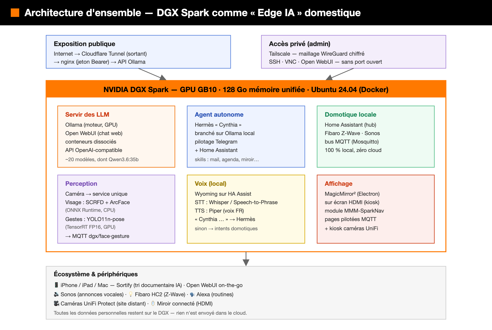
Figure 2 — Le DGX Spark comme « edge IA » domestique : une seule machine, plusieurs métiers.
4. Servir des LLM en local
4.1 Ollama et Open WebUI : dissocier pour gagner en flexibilité
Le socle est composé de deux briques bien connues : Ollama (le moteur d'inférence qui charge les modèles sur le GPU) et Open WebUI (l'interface de chat web). Le choix structurant a été de les faire tourner dans deux conteneurs Docker distincts, et non dans l'image « tout-en-un » qui les empaquette ensemble.
Pourquoi ? Pour deux raisons concrètes :
- Découpler les mises à jour. Ollama sort très souvent (nouveaux modèles, optimisations GPU). Dans l'image groupée, Ollama reste en retard car il n'est reconstruit qu'au rythme d'Open WebUI. Dissociés, on met à jour l'un sans toucher l'autre.
- Exposer Ollama comme une API. En isolant Ollama derrière son propre point d'entrée, on peut lui donner un nom de domaine et l'utiliser comme une API LLM compatible OpenAI depuis n'importe quelle application — c'est ce qui rend possible le use case Sortify (§7).
| Conteneur | Rôle | Exposition |
|---|---|---|
| ollama | Moteur d'inférence (accès GPU) | localhost uniquement, derrière nginx |
| open-webui | Interface de chat web | localhost uniquement, derrière nginx |
| watchtower | Mise à jour automatique des images officielles | — |
Une vingtaine de modèles cohabitent sur la machine (du petit modèle rapide pour les tests jusqu'à des modèles de 35 à 70 milliards de paramètres), stockés sur un volume persistant qui survit aux recréations de conteneur. Le modèle de travail principal pour le tri documentaire est Qwen3.6:35b.
4.2 Mettre à jour les conteneurs : automatique là où c'est sûr, manuel là où c'est risqué
La stratégie de mise à jour est différenciée selon le risque :
- Images officielles à interface stable (Ollama, Open WebUI) : Watchtower vérifie chaque nuit s'il existe une nouvelle image, la télécharge et recrée le conteneur avec les mêmes paramètres. Zéro intervention.
- Images construites localement (l'agent Hermès, §9.2) : mise à jour manuelle et supervisée. Watchtower ne sait pas les reconstruire, et surtout un agent autonome sur un dépôt amont qui bouge des dizaines de fois par jour mérite un pull contrôlé, pas un pull aveugle. On a donc mis en place une veille qui notifie quand une mise à jour existe, et un script d'application sûre avec bascule de retour arrière (rollback) automatique si le démarrage échoue.
« Tout auto-updater » est une fausse bonne idée. On automatise ce qui est stable et sans surface d'attaque entrante ; on garde la main sur ce qui est fragile ou exposé. La bonne granularité de mise à jour est une décision d'architecture, pas un réglage par défaut.
5. Exposer sans ouvrir de ports : Cloudflare Tunnel
Comment utiliser l'API Ollama ou l'interface Open WebUI depuis l'extérieur, en mobilité, sans
transformer sa box Internet en passoire ? La réponse retenue : ne jamais ouvrir de port
entrant, et router le trafic par un tunnel sortant avec
Cloudflare Tunnel (le démon cloudflared).
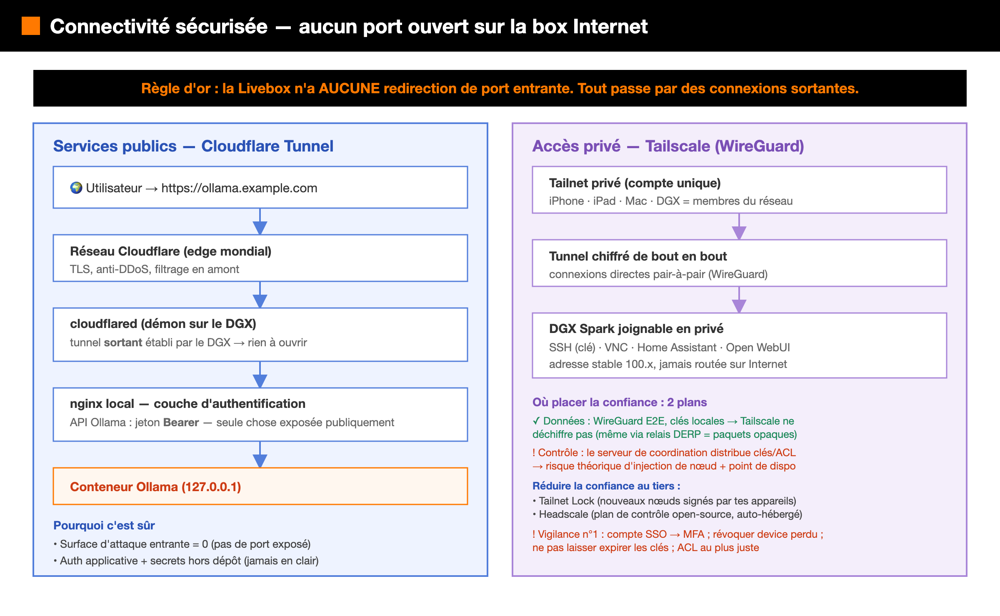
Figure 3 — Deux voies d'accès, une seule règle : aucune redirection de port entrante sur la box.
Le principe : c'est le DGX qui initie la connexion vers le réseau Cloudflare
(connexion sortante, comme quand un navigateur va sur un site). Cloudflare devient le point d'entrée
public (par exemple https://ollama.example.com), et fait redescendre les requêtes par
ce tunnel déjà ouvert de l'intérieur. La box Internet n'a aucune redirection de port :
vue de l'extérieur, il n'y a tout simplement rien à attaquer.
En quoi est-ce sûr ?
- Surface d'attaque entrante nulle. Aucun port ouvert = aucun service exposé à scanner ou à forcer depuis Internet.
- TLS et filtrage en amont. Le chiffrement et une première barrière anti-abus sont assurés par le réseau Cloudflare, avant même d'atteindre la maison.
- Authentification applicative. Derrière le tunnel, un nginx local impose un jeton Bearer sur l'API Ollama. Les secrets vivent côté serveur, en mode restreint, jamais dans le code ni dans la documentation. Seule l'API Ollama est exposée publiquement : l'interface Open WebUI, elle, n'est plus accessible depuis Internet (voir §8).
Cloudflare Tunnel est un reverse-proxy qui termine le TLS à son edge : c'est
Cloudflare qui présente le certificat de ollama.example.com, donc il
déchiffre la requête à son entrée, puis la re-chiffre vers le DGX. Autrement dit,
au point de passage Cloudflare, le contenu est en clair — y compris les
prompts et, le cas échéant, le contenu des documents envoyés à l'API. Ce n'est
pas du chiffrement de bout en bout. On déplace donc une part de confiance vers un tiers,
comme avec n'importe quel CDN.
Trois précisions importantes pour relativiser — et bien arbitrer :
- Cela ne concerne QUE le trafic qui sort par le domaine public. À la maison (LAN) ou via Tailscale, les applications — dont Sortify — appellent le DGX directement : Cloudflare n'est alors pas du tout dans le chemin.
- C'est un modèle de confiance, pas une faille. On s'appuie sur la politique de Cloudflare (ne pas inspecter ni conserver le contenu proxifié), exactement comme on fait confiance à un CDN ou à un hébergeur. Acceptable pour des usages courants, discutable pour des données très sensibles.
- Pour zéro tiers dans le chemin, privilégier Tailscale (§6). En accédant à l'API Ollama via le tailnet plutôt que via le domaine public, la liaison est chiffrée de bout en bout (WireGuard) et Cloudflare sort du circuit. On réserve alors Cloudflare au partage réellement public et non confidentiel.
C'est aussi pourquoi, pour l'accès d'administration (SSH, VNC), on ne passe jamais par un service public : Tailscale uniquement.
6. Accès privé : Tailscale, un réseau entre mes appareils
Pour administrer le DGX (et le Mac) depuis l'iPhone ou l'iPad de n'importe où — ouvrir une session SSH, prendre la main en VNC sur l'écran — on utilise Tailscale. C'est un VPN maillé bâti sur le protocole WireGuard : tous mes appareils (iPhone, iPad, Mac, DGX) rejoignent un même réseau privé chiffré (un « tailnet »), et se parlent directement, comme s'ils étaient sur le même LAN — où qu'ils soient physiquement.
Comme pour Cloudflare, le point clé est qu'aucun port n'est ouvert sur la box :
chaque appareil établit une connexion sortante vers le service de coordination, puis les pairs
communiquent en direct via un tunnel WireGuard chiffré de bout en bout. Chaque nœud reçoit une
adresse stable (en 100.x) qui n'est jamais routée sur l'Internet public.
Quel niveau de confiance — et quelles vigilances ?
Le modèle est dit « zero-trust » : on ne fait pas confiance au réseau (le Wi-Fi d'un hôtel, la 5G), mais à l'identité authentifiée de chaque appareil. C'est solide, à condition de connaître les points de vigilance :
| Ce qui protège | Ce sur quoi rester vigilant |
|---|---|
| Chiffrement WireGuard (réputé robuste), de bout en bout. | Le compte SSO qui pilote le tailnet devient « la clé du royaume » → authentification multifacteur obligatoire sur ce compte. |
| Identité par appareil : un device non autorisé n'entre pas. | Le serveur de coordination (Tailscale) est un tiers de confiance : il orchestre les clés (mais ne voit pas le contenu du trafic). |
| SSH durci en complément : connexion par clé uniquement, mot de passe refusé, liste blanche d'utilisateurs. | Désactiver l'expiration des clés sur les nœuds clés (sinon perte d'accès à distance au pire moment) ; révoquer immédiatement un appareil perdu. |
| Aucune surface publique : rien à scanner depuis Internet. | Garder les règles d'accès (ACL) au plus juste : un appareil ne devrait joindre que ce dont il a besoin. |
Où placer exactement la confiance : plan de données vs plan de contrôle
Pour bien jauger la solution, il faut séparer deux plans — et on ne leur accorde pas le même niveau de confiance :
- Le plan de données (ton trafic) — tu ne fais PAS confiance à Tailscale ici. Le chiffrement est WireGuard de bout en bout et les clés privées ne quittent jamais tes appareils : Tailscale ne peut pas déchiffrer ton trafic. Même quand la connexion directe pair-à-pair échoue et que le flux passe par un relais DERP de Tailscale, ce relais ne voit que des paquets chiffrés opaques. La confidentialité ne dépend donc pas de la confiance dans Tailscale — c'est le point fort majeur.
- Le plan de contrôle (le serveur de coordination) — c'est là qu'est la confiance résiduelle. Il ne voit pas le contenu, mais il distribue les clés publiques et les ACL et s'appuie sur ton fournisseur d'identité (SSO). Le risque théorique : un serveur de coordination compromis pourrait injecter un nœud pirate dans le tailnet (substitution de clé). Il constitue aussi un point de disponibilité (s'il tombe, les liaisons existantes tiennent, mais l'ajout/renouvellement de nœuds ne se fait plus).
Bonne nouvelle : cette confiance résiduelle se réduit, voire s'élimine :
- Tailnet Lock (fonction native) : les nouveaux nœuds doivent être signés par tes propres appareils de confiance — même Tailscale ne peut alors plus ajouter un device sans ta signature. C'est la parade directe à l'injection de nœud.
- Headscale : une réimplémentation open-source du plan de contrôle, auto-hébergeable, qui sort complètement Tailscale Inc. de la boucle (au prix de l'exploitation).
- À l'extrême, WireGuard nu : aucun serveur de coordination, mais clés et traversée de NAT à gérer soi-même.
Confiance forte par défaut : chiffrement de bout en bout, clés locales, client open-source, WireGuard audité, éditeur au bon historique sécurité. Le risque pratique n°1 reste ton compte SSO (sa compromission = accès au tailnet) → MFA non négociable. Et si l'on veut un « zéro confiance au tiers », on active Tailnet Lock (rapide) ou l'on passe à Headscale (radical).
Cloudflare Tunnel sert à exposer des services publics (une API, une UI) à des tiers, avec authentification. Tailscale sert à se donner un accès privé d'administration à ses propres machines. Les deux partagent la même règle d'or : on ne perce jamais la box. Ensemble, ils couvrent l'exposition publique et l'accès privé sans aucun port entrant.
7. Use case « Sortify » : le tri documentaire par IA
Sortify est une application (Mac, iPhone, iPad) qui s'attaque à une corvée universelle : la paperasse. Tout document qui arrive — pièce jointe d'e-mail, scan de l'imprimante, fichier déposé dans un dossier « inbox », photo prise au mobile — est capté, analysé par IA, puis indexé et rangé automatiquement. On scanne et on oublie : l'IA classe et retrouve à notre place.
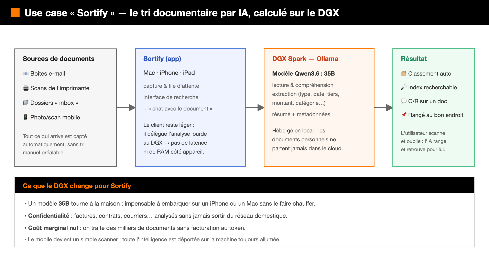
Figure 4 — De la source au classement : le client capte, le DGX comprend.
Le point central, c'est où se fait l'analyse. Les documents sont traités par le modèle Qwen3.6:35b hébergé sur Ollama, sur le DGX Spark. L'application cliente reste légère : elle capture, met en file d'attente, et délègue le gros du travail à la machine toujours allumée. Résultat : on peut scanner un document depuis son mobile sans se soucier de la latence ni de la mémoire — et c'est pareil sur le Mac.
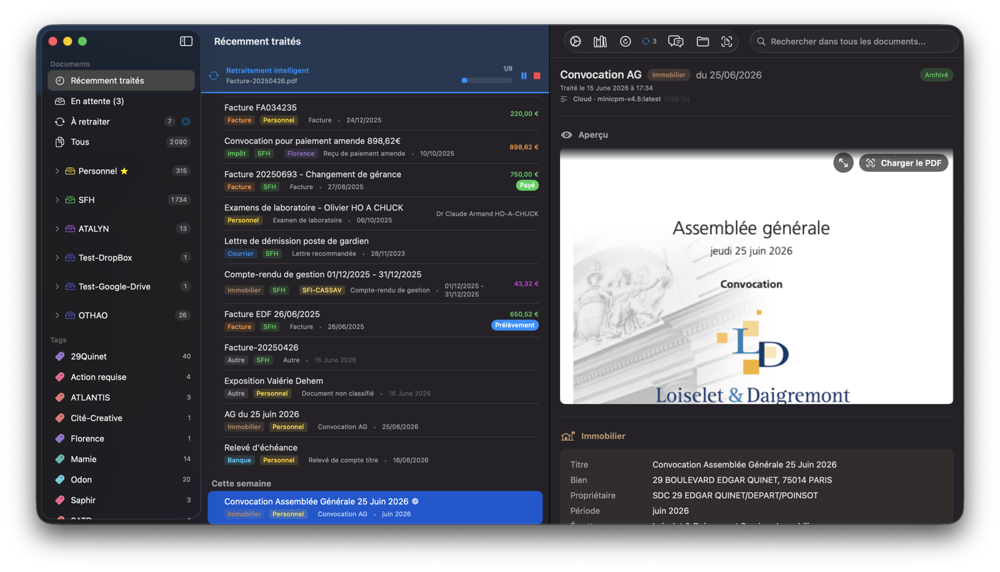
Sortify sur Mac — un document analysé, résumé et catégorisé.
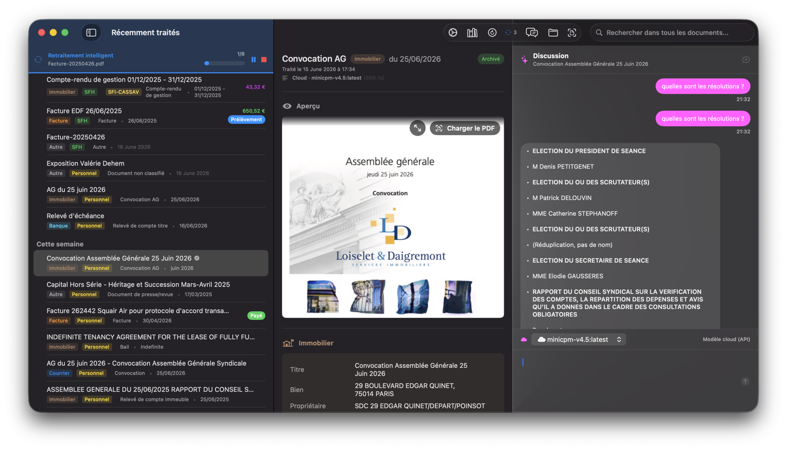
Sortify sur Mac — « chat avec le document » : poser une question sur son contenu.
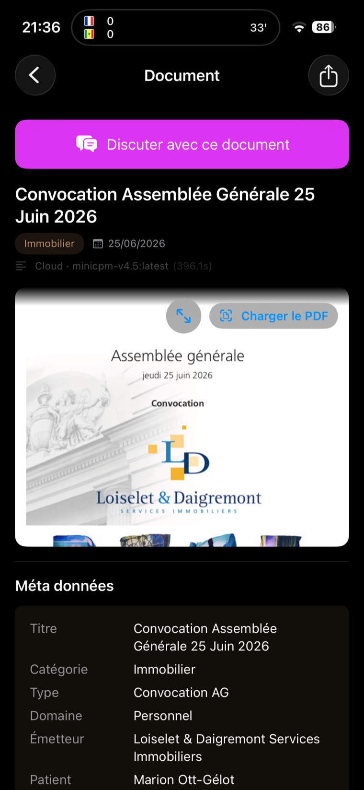
Sur iPhone — analyse d'un document scanné en mobilité.
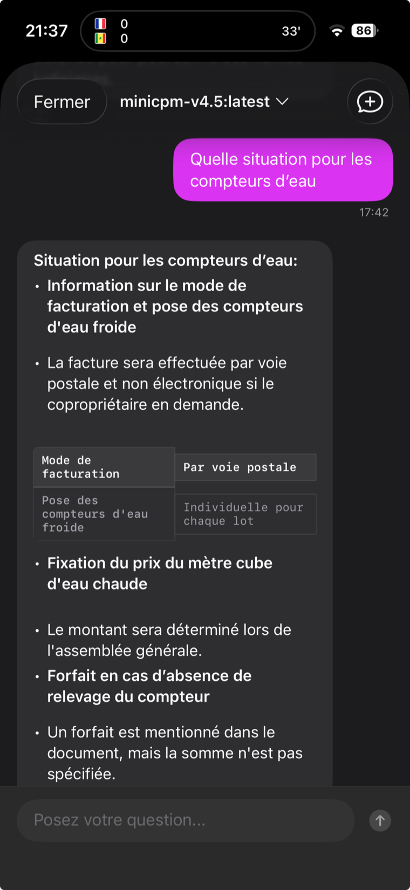
Sur iPhone — questions/réponses sur un document, le calcul se fait sur le DGX.
Ce que le DGX change, en trois points :
- Un modèle 35B à la maison : impensable à embarquer sur un iPhone ou un Mac sans le faire chauffer ni vider la batterie. La taille de modèle débloque la qualité d'analyse.
- Confidentialité : factures, contrats, courriers administratifs… sont analysés sur le DGX, jamais sur un service d'IA tiers. À la maison (LAN) ou via Tailscale, le contenu ne quitte pas le réseau domestique. Pour un accès distant par le domaine public, le trafic transite par Cloudflare (cf. la mise en garde du §5) — d'où l'intérêt de privilégier Tailscale pour les documents les plus sensibles.
- Coût marginal nul : on traite des milliers de documents sans facturation au token.
8. Open WebUI personnel : un ChatGPT-like privé, accessible par Tailscale
L'interface Open WebUI offre un « ChatGPT-like » privé : mêmes usages qu'un assistant grand public — reformuler un courrier sensible, analyser un document confidentiel, préparer une démarche administrative — mais la conversation et les pièces jointes restent sur le DGX, jamais sur un service tiers. C'est l'outil idéal pour les tâches du quotidien qui touchent à des données personnelles.
Pourquoi on l'a retiré de l'accès public
Open WebUI était d'abord exposé comme l'API (§5), derrière le tunnel Cloudflare avec une authentification basique (HTTP Basic Auth) au niveau de nginx. À la réflexion, c'est un maillon trop faible pour une interface qui donne accès à des données personnelles :
- la Basic Auth n'a ni limitation de débit, ni verrouillage de compte, ni MFA → elle est exposée au bruteforce en ligne et au credential-stuffing ;
- les identifiants sont renvoyés à chaque requête (leur seule protection en transit est le TLS) ;
- la sécurité se réduit alors à la robustesse d'un mot de passe.
Plutôt que de durcir un point d'entrée public (ajouter du rate-limiting, voire un portail d'identité devant), on a fait le choix le plus simple et le plus sûr : supprimer purement et simplement l'exposition publique d'Open WebUI. Il n'est désormais accessible que via Tailscale (et sur le réseau local). On accède à l'interface par l'adresse privée du DGX sur le tailnet — la liaison est chiffrée de bout en bout (WireGuard), et il n'y a plus rien à bruteforcer depuis Internet. Open WebUI conserve par-dessus sa propre authentification applicative (comptes/login).
Quand une protection est structurellement faible (ici la Basic Auth), la mettre derrière un réseau privé authentifié (Tailscale) est souvent plus robuste — et plus simple — que d'empiler des rustines sur un endpoint public. On réserve l'exposition publique (Cloudflare) à ce qui en a vraiment besoin : l'API Ollama, protégée par jeton.
9. La maison : Home Assistant & Hermès
9.1 Home Assistant, le hub domotique local
Home Assistant tourne en conteneur sur le DGX et joue le rôle de hub domotique local-first (zéro cloud). Il agrège les équipements de la maison et leur donne un langage commun :
- la box domotique Fibaro (maître Z-Wave) reste en place ; Home Assistant la surcouche et expose tous les appareils en entités ;
- les enceintes Sonos (découvertes automatiquement) deviennent des sorties audio pilotables — c'est par elles que la maison « parle » ;
- un bus de messages MQTT (un broker Mosquitto local) sert de système nerveux : c'est là que la perception (visage, gestes, présence) publie ses événements, et que les autres briques s'y abonnent.
Tout reste sur le réseau local. Le hub qui pilote la maison n'est pas exposé sur Internet : on y accède en LAN ou via Tailscale, jamais via un service public.
9.2 Hermès, l'agent autonome (« Cynthia »)
Hermès est un agent autonome (projet open-source de Nous Research) qui tourne en conteneur sur le DGX, branché sur le LLM local servi par Ollama. C'est le « cerveau » qui peut raisonner, enchaîner des outils et agir. On l'a personnifié sous le nom de Cynthia.
Aujourd'hui, on lui parle de deux manières :
- Telegram : un bot privé (avec liste blanche d'utilisateurs) permet de lui écrire de n'importe où — « fais-moi une synthèse météo + agenda + anniversaires ce matin », « mets telle info sur l'écran du miroir »… L'agent dispose de skills (envoi d'e-mail, lecture/écriture d'agenda, etc.) et d'un planificateur de tâches interne.
- Home Assistant : Hermès est intégré au hub, ce qui lui permet d'agir sur la maison (annonces, appareils) et d'être déclenché par elle.
En attendant, l'interaction se fait au clavier (Telegram) ou via le pipeline vocal du miroir (§10.2). L'objectif est une capture audio dédiée — soit via l'Apple Watch (déclencheur au poignet), soit via un mot d'activation (« wakeword ») et un micro au niveau du miroir — pour parler à Cynthia sans rien toucher.
Point de sécurité notable : l'agent n'est exposé sur aucun port entrant. Côté
Telegram, c'est lui qui sort interroger les serveurs (polling) ; son tableau de bord, qui
stocke des clés, est lié à 127.0.0.1 et joignable seulement via un tunnel SSH. Là encore,
rien n'est ouvert sur l'extérieur.
10. Le miroir connecté augmenté
C'est la vitrine du projet : un miroir connecté (un écran derrière une vitre sans tain) qui affiche l'heure, la météo, l'agenda… mais surtout qui voit, écoute, comprend et réagit. Toute l'intelligence est hébergée sur le DGX.
10.1 MagicMirror² hébergé sur le DGX
L'affichage repose sur MagicMirror² (une application Electron open-source) qui
tourne en kiosque sur l'écran HDMI branché au DGX, avec connexion automatique au démarrage. On y a
ajouté des modules tiers (calendrier, météo, mémos, bourse, domotique Fibaro…) et surtout un module
maison, écrit et audité par nos soins : MMM-SparkNav, qui gère un jeu
de pages et la navigation.
Pour les briques sensibles (navigation, pages poussées par l'agent), on a écrit des modules maison plutôt que d'installer des extensions non vérifiées. Sur une machine qui voit le salon et manipule des données personnelles, la confiance dans le code qui tourne est une exigence de sécurité.
10.2 Voix locale : reconnaissance et synthèse vocales (STT / TTS)
La voix s'appuie sur le pipeline « Assist » de Home Assistant, alimenté par des conteneurs Wyoming qui tournent sur le DGX. L'architecture distingue deux voies selon l'intention :
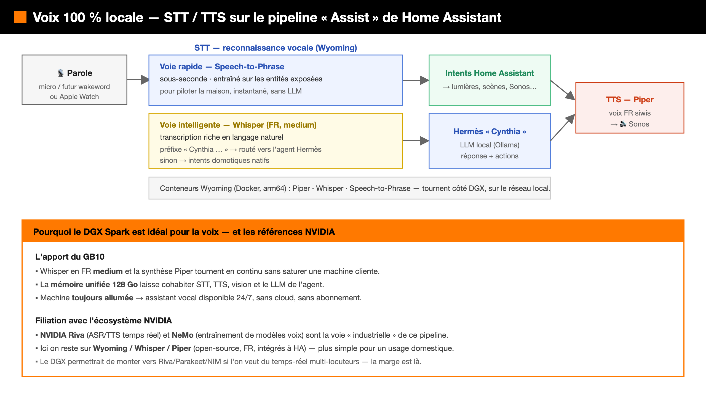
Figure 5 — Deux voies vocales : rapide pour la domotique, intelligente pour l'agent.
| Voie | Reconnaissance (STT) | Usage |
|---|---|---|
| Rapide « commandes » | Speech-to-Phrase (sous-seconde, entraîné sur les appareils de la maison) | Piloter la maison instantanément, sans solliciter de LLM. |
| Intelligente « conversation » | Whisper (français, qualité medium) | Si la phrase commence par « Cynthia… » → routée vers l'agent Hermès ; sinon → intents domotiques natifs. |
La synthèse vocale (TTS) est assurée par Piper (voix française), et la maison répond sur les enceintes Sonos. Quand la requête est longue à traiter (l'agent réfléchit), l'expérience est hybride : réponse immédiate si c'est rapide, sinon un « je m'en occupe » puis une livraison asynchrone de la réponse sur Sonos.
Pourquoi le DGX — et les références NVIDIA
Faire tourner Whisper en français medium et la synthèse Piper en continu sans saturer une machine cliente, c'est précisément le terrain du GB10 : la mémoire unifiée laisse cohabiter STT, TTS, vision et le LLM de l'agent, et la machine est disponible 24/7. Côté filiation, ce pipeline est la version « domestique et open-source » d'une chaîne que NVIDIA industrialise avec Riva (reconnaissance et synthèse temps réel) et NeMo (entraînement de modèles voix). On est resté sur Wyoming/Whisper/Piper pour la simplicité et le français intégré à Home Assistant — mais le DGX laisse la marge pour monter vers Riva/Parakeet/NIM si l'on veut du temps-réel multi-locuteurs.
10.3 Reconnaissance faciale : « Bonjour <Prénom> »
Une caméra branchée au DGX alimente un service de perception qui détecte et reconnaît les visages. La détection utilise SCRFD, l'empreinte faciale (un vecteur de 512 nombres) est produite par ArcFace, et la comparaison à une petite galerie locale donne l'identité (ou « inconnu »). Quand un visage connu apparaît, un message est publié sur le bus MQTT, et Home Assistant annonce « Bonjour <Prénom> » sur les enceintes Sonos.
Détail d'ingénierie qui compte : cette reconnaissance tourne sur le CPU (via ONNX Runtime), de façon volontairement décimée à quelques images par seconde. Elle n'a pas besoin du GPU — qu'on garde libre pour le LLM et la reconnaissance gestuelle.
La reconnaissance faciale ne quitte jamais la maison : aucune image, aucune empreinte n'est envoyée vers un service tiers. C'est l'illustration la plus nette de l'intérêt de l'edge : ce type de traitement n'est acceptable que strictement local.
10.4 Reconnaissance gestuelle « à la Minority Report »
Le même service de perception fait aussi de la reconnaissance de gestes pour piloter le miroir à la main, sans le toucher. Cette fois on utilise le GPU : un modèle de pose YOLO11n-pose, exporté en moteur TensorRT FP16, suit en temps réel les articulations du corps. Une heuristique analyse la trajectoire du poignet (normalisée par la largeur des épaules) pour reconnaître des gestes : balayage gauche/droite/haut/bas, deux mains levées…
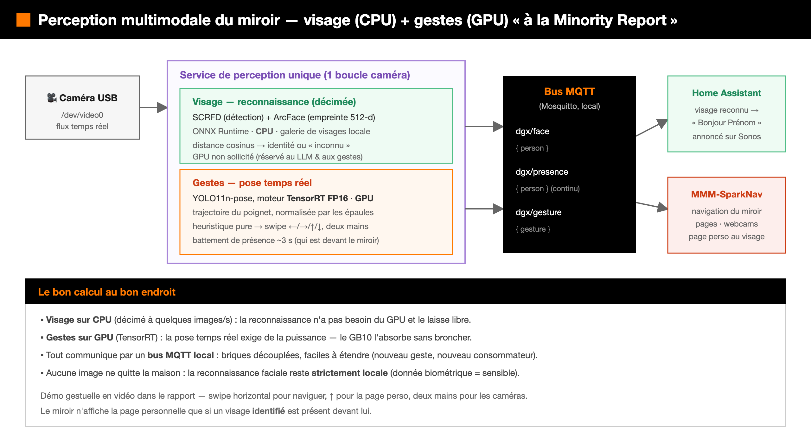
Figure 6 — Le bon calcul au bon endroit : visage sur CPU, gestes sur GPU, tout sur un bus MQTT local.
Les gestes sont publiés sur MQTT (dgx/gesture) et consommés par le module
MMM-SparkNav du miroir : un balayage horizontal fait défiler l'anneau de pages, un
balayage vers le haut affiche la page personnelle, deux mains levées ouvrent les caméras. Le tout
donne une interaction fluide, sans contact — l'effet « Minority Report ».
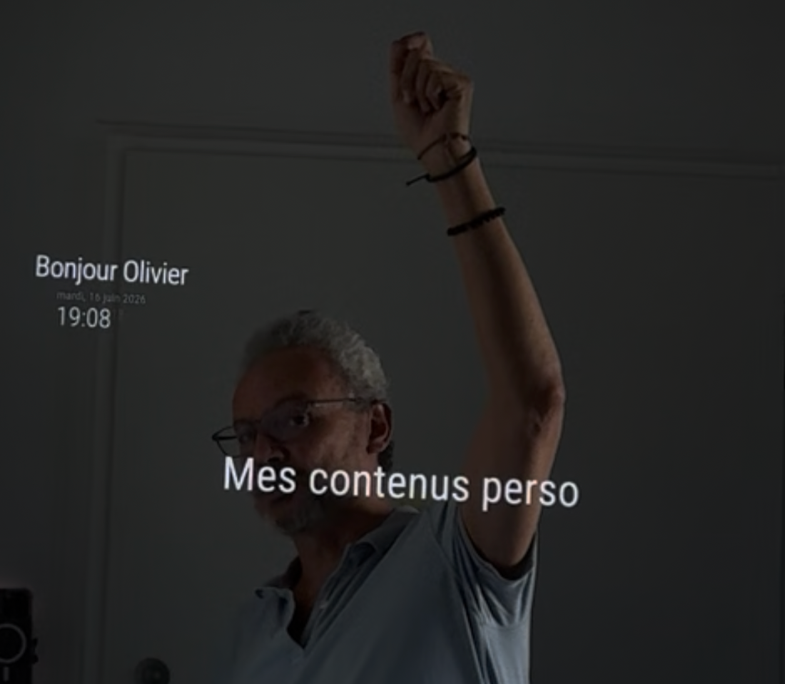
Figure 7 — Piloter le miroir d'un geste.
Démonstration vidéo
La vidéo ci-dessous montre l'expérience utilisateur en conditions réelles : naviguer entre les pages du miroir d'un simple geste de la main.
Vidéo — reconnaissance gestuelle sur le miroir connecté (lecture nécessite une connexion Internet).
La reconnaissance par pose est sensible aux conditions : il faut être à bonne distance, debout, face caméra, avec des gestes amples. Et un piège structurel subsiste — lever la main pour amorcer un geste ressemble à un vrai balayage vertical. Le retour d'expérience, c'est aussi documenter ce qui n'est pas encore parfait : la voie de correction (désactiver la navigation verticale par balayage tout en gardant l'auto-affichage au visage et les balayages horizontaux) est identifiée pour une prochaine itération.
10.5 Hermès × miroir : une page pilotée par l'agent
Le miroir et l'agent se rejoignent ici. On peut demander à Cynthia (par la voix ou par Telegram) de générer le contenu d'un écran du miroir : « mets la synthèse du matin sur l'écran Hermès ». L'agent compose une page HTML et la pousse sur le bus MQTT (message conservé/retain) vers l'écran cible.
Le miroir rend ce HTML dans une iframe en bac à sable (« sandbox »), avec une politique de sécurité de contenu (CSP) stricte : aucun script ne s'exécute, aucune ressource distante n'est chargée. C'est le point de sécurité crucial : on affiche du contenu généré par un LLM sans lui donner les clés du navigateur. Même un HTML malicieux y serait inerte.
Le mécanisme est générique : d'autres écrans de l'anneau sont alimentés de la même façon par des générateurs déterministes (par exemple un tableau de bord de monitoring de la maison — appareils connectés au réseau et lumières allumées — ou des pages d'actualité), publiés périodiquement et rendus dans la même iframe sandbox.
10.6 Pages contextuelles déclenchées par le visage
Dernière brique, et sans doute la plus « magique » à l'usage : le miroir n'affiche la page personnelle d'un utilisateur que si son visage est reconnu devant lui. La reconnaissance faciale (§10.3) publie en continu un « battement de présence » sur MQTT ; le module de navigation s'en sert pour savoir qui est là, et bascule automatiquement sur le contenu de cette personne (ses mémos, ses informations), surmonté du bandeau « Bonjour <Prénom> ».
On obtient une expérience contextuelle et privée : le bon contenu, pour la bonne personne, au bon moment — et rien n'est affiché si personne d'identifié n'est devant le miroir. C'est la convergence de toutes les briques : perception (qui est là), agent (quoi afficher), affichage (comment), le tout orchestré localement sur le DGX.
10.7 Démo — visage, gestes & écrans du miroir
Une vue d'ensemble des différents écrans/pages du miroir en action — navigation, pages contextuelles, contenus poussés par Hermès :
Vidéo — visage, gestes & écrans du miroir (lecture nécessite une connexion Internet).
11. Coder en local : Claude Code, OpenCode, KiloCode, Xcode
Sans doute l'usage le plus frappant pour un public de développeurs. Comme Ollama expose une API compatible OpenAI et Anthropic, on branche les modèles de code locaux du DGX dans la quasi-totalité des outils de dev — open-source comme propriétaires — sans abonnement et sans envoyer une ligne de code dans le cloud. Le DGX devient un copilote privé, au coût marginal nul, qu'on retrouve dans tous ses éditeurs.
Le même Ollama (sur le DGX) alimente OpenCode, KiloCode, Claude Code et Xcode. On change d'outil,
pas de cerveau. Modèles utilisés ici selon la tâche : qwen3-coder:30b,
qwen3.5:27b, qwen3.6:35b.
11.1 OpenCode — agent de code en terminal (open-source)
OpenCode se configure pour taper l'Ollama du DGX : ici le modèle qwen3-coder:30b-q8,
« en local sur DGX Spark ». Rien ne sort de la machine.
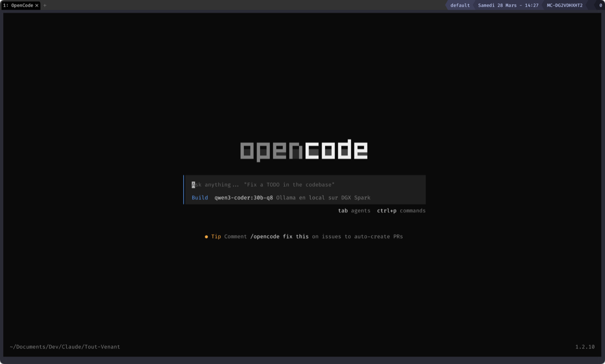
OpenCode — modèle qwen3-coder:30b-q8 servi en local par le DGX.
11.2 KiloCode
Même principe pour KiloCode (agent de code) : l'endpoint pointe sur l'Ollama du DGX.
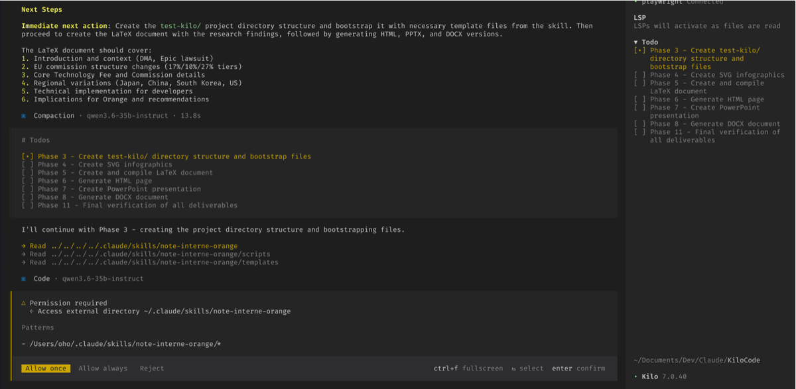
KiloCode — les modèles locaux du DGX comme backend.
11.3 Claude Code — au prix d'un petit hack proxy
Claude Code (2.1.x) est plus exigeant : il valide le modèle au démarrage en
appelant un endpoint Anthropic /v1/messages/count_tokens qu'Ollama ne sert
pas → sans lui, il refuse le modèle (« issue with the selected model »). La parade : un
petit proxy local qui fournit cet endpoint (comptage de tokens) et
relaie le reste vers Ollama. Trois options selon le goût :
| Option | Ce que c'est | Compromis |
|---|---|---|
| Shim maison (~50 lignes) | répond à count_tokens (estimation) + relaie le reste, injecte le jeton, tué à la fermeture | ultra-léger, zéro dépendance · comptage approximatif (sans enjeu vu les fenêtres de contexte énormes) |
| claude-code-router | proxy Node dédié « Claude Code + backends tiers » | clé en main · une dépendance Node |
| LiteLLM | proxy Python complet (comptage exact) | robuste · plus lourd |
Un wrapper maison (claude-dgx) automatise tout : il lit le jeton dans le trousseau
(Keychain), auto-détecte le meilleur chemin (Tailscale → LAN → Cloudflare), lance le
proxy puis Claude Code, et nettoie le proxy à la sortie.
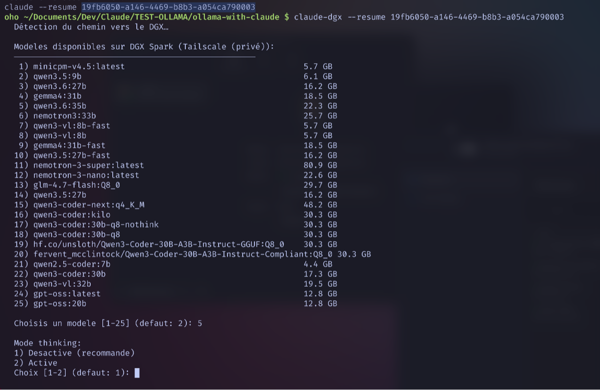
Lancement via claude-dgx — choix du modèle local.
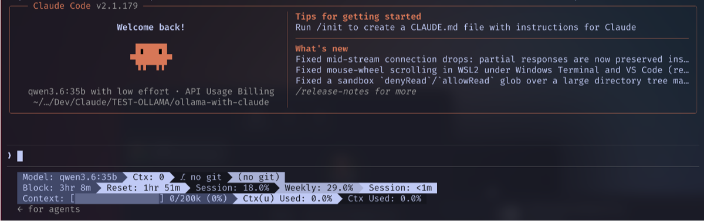
Claude Code 2.1.179 sur qwen3.6:35b local — jauge de contexte alimentée par le proxy.
11.4 Démo — un site web 3D, généré du premier coup
Pour juger la qualité : sur la consigne « fais un site web engageant avec du contenu 3D », Qwen3.6:35B a produit le résultat ci-dessous au PREMIER jet (aucune retouche), entièrement en local sur le DGX.
Premier jet de Qwen3.6:35B (local) — site web avec contenu 3D.
11.5 Xcode — Ollama comme provider natif
Même l'IDE d'Apple s'y prête : le « Coding Intelligence » de Xcode accepte des
providers tiers — on a ajouté « Ollama DGX Spark » à côté d'OpenAI, Anthropic et d'un
proxy LLM d'entreprise. Pour la démo, un jeu Snake entièrement développé en ~1 h (tout
compris) avec qwen3.5:27b.
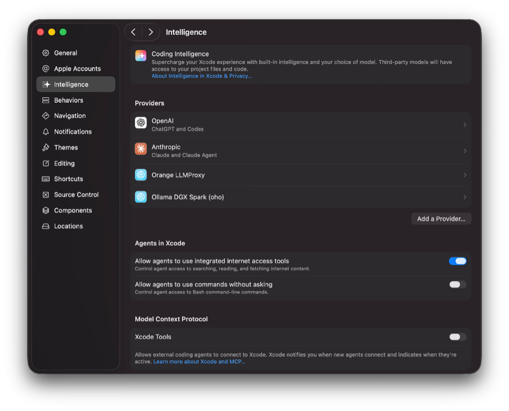
Xcode — « Ollama DGX Spark » comme provider de code, aux côtés d'OpenAI/Anthropic.
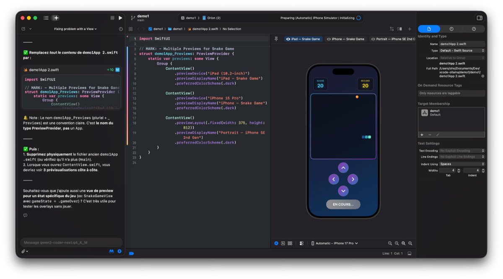
Snake codé en ~1 h avec qwen3.5:27b (local).
Un développeur peut travailler avec un assistant IA puissant, privé et gratuit à l'usage, intégré dans ses outils habituels — code et secrets ne quittent jamais la maison. Le DGX transforme l'edge domestique en plateforme de dev assisté.
12. Performances & découpage des ressources
Une question revient toujours : « tout ça en même temps, sur une seule machine, ça tient ? ». La réponse tient à un principe — placer chaque charge là où elle coûte le moins — et à un budget de ressources confortable. Voici comment les briques se partagent le GPU, les cœurs CPU et la mémoire unifiée.
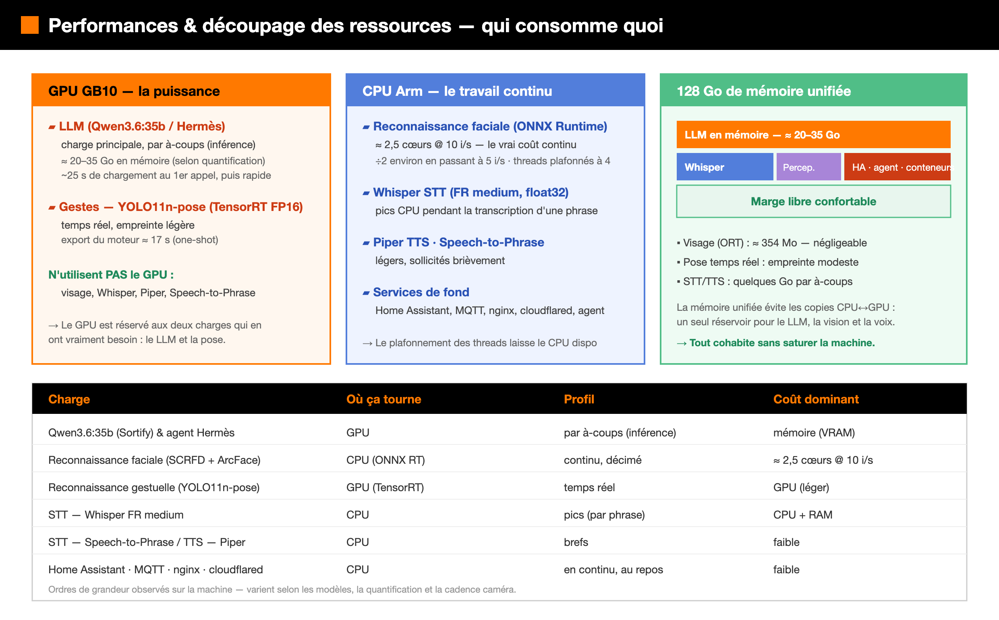
Figure 8 — Le découpage GPU / CPU / mémoire entre le LLM, la vision, la voix et les services de fond.
12.1 Vu en vrai : le DGX sous charge
Pour rendre ce découpage concret, un petit moniteur maison (dgx-mon) affiche en temps
réel l'usage CPU / GPU / mémoire unifiée, les modèles Ollama chargés et les conteneurs. La capture
ci-dessous est un screenshot pris sur un iPad connecté en SSH via Tailscale (on observe
le DGX de n'importe où) pendant une inférence intensive : génération de code via Claude
Code avec qwen3.6:35b en effort « medium ».
On y lit le modèle chargé (qwen3.6:35b, 100 % GPU, ≈ 29 Go), la mémoire unifiée à
49/122 Gio, et surtout la consommation qui grimpe à ~72 W (contre ~14 W au repos),
température en hausse : le GB10 travaille à plein — mais reste remarquablement sobre
pour ce qu'il abat.
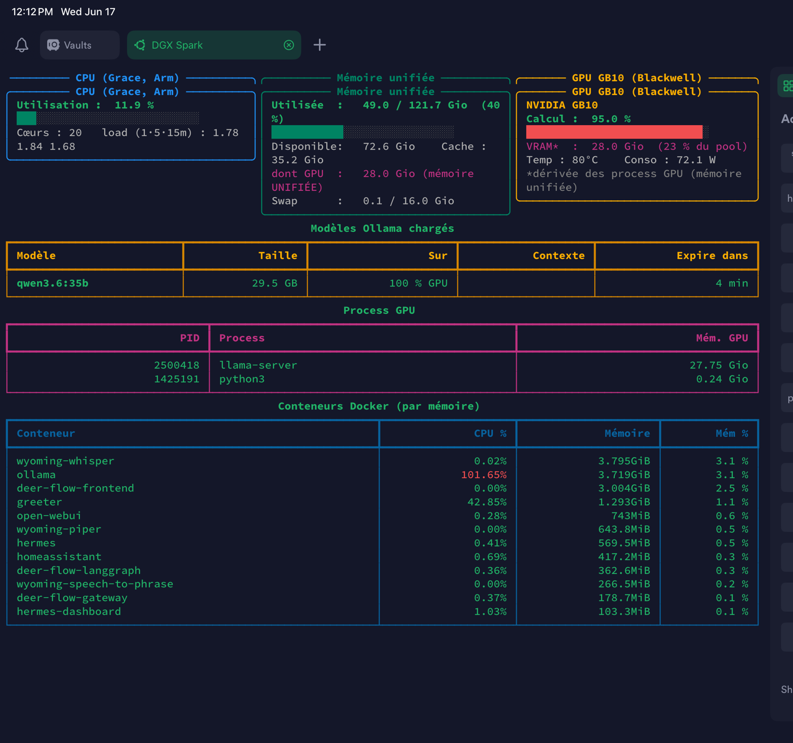
dgx-mon depuis un iPad (SSH via Tailscale) — qwen3.6:35b en inférence (Claude Code), ~72 W vs ~14 W au repos.
Le raisonnement de répartition
- GPU = LLM + gestes. Le GPU GB10 est réservé aux deux charges qui en ont vraiment besoin : l'inférence du LLM (Qwen3.6:35b pour Sortify, et le modèle de l'agent Hermès) et la pose temps réel (YOLO11n-pose en TensorRT). L'inférence du LLM travaille par à-coups (quand on lui pose une question), ce qui laisse de la marge pour la pose qui, elle, est continue mais légère.
- CPU = la perception continue et la voix. La reconnaissance faciale est le vrai coût permanent : environ 2,5 cœurs à 10 images/seconde (et près de moitié moins si l'on descend à 5 i/s). Elle tourne volontairement sur CPU (ONNX Runtime, threads plafonnés) pour ne pas voler le GPU au LLM. Whisper (transcription) consomme par pics lors d'une phrase ; Piper (synthèse) et Speech-to-Phrase sont légers.
- Mémoire unifiée = le grand réservoir partagé. Le LLM occupe la plus grosse part (de l'ordre de 20 à 35 Go selon le modèle et sa quantification), Whisper et les services (Home Assistant, MQTT, nginx, cloudflared, agent) quelques gigaoctets, la perception une empreinte modeste (la reconnaissance faciale tient dans ~350 Mo). Sur 128 Go, la marge reste confortable — et la mémoire unifiée évite de dupliquer les données entre CPU et GPU.
La cadence caméra de la reconnaissance faciale est le principal curseur de coût CPU : 10 i/s donne une réactivité agréable, 5 i/s divise la charge par deux pour un confort à peine moindre. C'est le genre d'arbitrage qu'on ajuste « à chaud » selon ce qui tourne en parallèle.
La leçon d'ensemble : ce n'est pas la puissance brute qui rend l'expérience fluide, c'est la discipline de placement. Un LLM 35B, de la vision sur deux processeurs différents, de la voix et une douzaine de services de fond cohabitent parce que chacun a été mis là où il gêne le moins — et parce que les 128 Go de mémoire unifiée du GB10 absorbent l'ensemble.
13. Aller plus loin : le guide d'installation NemoClaw
Tout cet écosystème suppose d'abord une étape moins visible : installer et configurer la machine. J'ai documenté ce parcours — de la mise en route du DGX Spark à la stack NemoClaw — dans un guide dédié publié sur mon blog.
Cet article date de mars 2026 : il n'est pas forcément à jour des dernières mises à jour publiées depuis par NVIDIA, mais il donne une bonne idée de la démarche d'implémentation et des choix d'installation.
👉 Lire le guide d'installation NemoClaw sur DGX Spark
14. DeerFlow : deep-research local (exploration à peine commencée)
Contrairement aux briques précédentes (qui tournent au quotidien chez moi), DeerFlow n'en est qu'à ses tout premiers pas : installé et branché, mais pas encore intégré ni vraiment éprouvé. Je le mentionne comme piste, pas comme acquis.
DeerFlow (open-source, par ByteDance, bâti sur LangGraph) est un framework de « deep research » multi-agents : on lui pose une question, il planifie la recherche, cherche sur le web (DuckDuckGo), lit les sources (Jina) et synthétise un rapport structuré — avec un bac à sable pour manipuler des fichiers. C'est l'équivalent open-source d'un « Deep Research ».
Sur le DGX, il tourne en conteneurs et est branché sur le LLM local (Ollama,
nemotron-3-super) : le raisonnement reste à la maison, seules les requêtes de recherche
sortent (données publiques). L'interface est volontairement privée — accessible en
loopback via un tunnel SSH, jamais exposée. La piste à creuser : un assistant de recherche
approfondie personnel, dont tout le raisonnement est 100 % local. Affaire à suivre.
15. Bilan & perspectives
Au terme de ce parcours, le DGX Spark s'est révélé être bien plus qu'un serveur de modèles : un socle d'« edge IA » domestique sur lequel se sont empilés, sans se gêner, un service de LLM, un agent autonome, un hub domotique, de la vision par ordinateur et de la synthèse vocale.
Ce que le DGX rend possible
- La privacy comme fondation, pas comme option. Documents, conversations, visages, son du salon : tout est traité localement. C'est le seul cadre acceptable pour des données aussi intimes.
- La cohabitation des charges. 128 Go de mémoire unifiée + un GPU capable : LLM 35B, vision GPU et CPU, voix… tournent ensemble, en continu.
- Le bon calcul au bon endroit. Visage sur CPU, gestes sur GPU, LLM sur GPU : on répartit pour que chaque brique ait ce qu'il lui faut, sans famine.
- Zéro port ouvert. Cloudflare (public) + Tailscale (privé) couvrent tous les accès distants sans jamais percer la box.
Les limites & vigilances
- Plafond de taille de modèle : la mémoire est finie ; au-delà d'une certaine taille, le cloud reste pertinent.
- Administration à sa charge : mises à jour, sauvegardes, pièges de configuration — un projet maison demande de l'entretien (et beaucoup de leçons apprises en chemin).
- Tiers de confiance résiduels : Cloudflare et le service de coordination Tailscale restent dans la boucle de la connectivité — à arbitrer en conscience.
- Robustesse de la perception : la reconnaissance gestuelle dépend des conditions et reste perfectible.
Et la suite
- Voix mains libres pour Cynthia (Apple Watch ou wakeword + micro au miroir).
- Monter en gamme sur la voix (Riva/NIM) si l'on veut du temps-réel multi-locuteurs.
- Affiner la reconnaissance gestuelle et enrichir le vocabulaire de gestes.
- Étendre les pages contextuelles et les automatisations agent × maison.
Le DGX Spark transforme une maison en plateforme d'IA privée et agentique : assez puissante pour faire tourner les modèles, la vision et la voix en continu ; assez sobre et silencieuse pour vivre dans un salon ; et assez locale pour qu'aucune donnée personnelle n'ait jamais besoin d'en sortir.
A personal field report on using a NVIDIA DGX Spark (GB10) as a home AI "edge computing" foundation: serving LLMs locally (Ollama / Open WebUI), exposing an API without opening a port (Cloudflare Tunnel) and connecting to it privately (Tailscale), sorting documents with AI (Sortify, Qwen3.6:35b), coding with local models across every editor (Claude Code, OpenCode, KiloCode, Xcode), and augmenting a smart mirror that sees, hears, understands and is controlled with gestures — all without any personal data ever leaving the home.
Keywords: DGX Spark --- Edge AI --- Agentic --- Local dev (Claude Code · OpenCode · Xcode) --- Home automation --- Privacy --- Ollama --- Tailscale --- Cloudflare
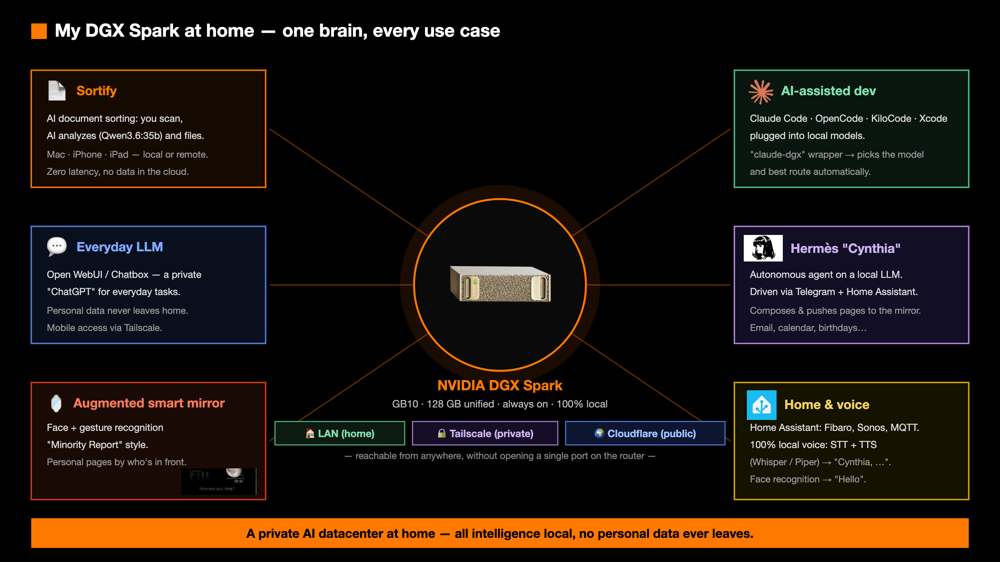
At a glance — the DGX at the center, its uses (documents, LLM, dev, mirror, agent, home) and the access paths (LAN · Tailscale · Cloudflare). The details are in the sections below.
1. The bet: a private AI datacenter at home
This document is a personal field report. It tells how a NVIDIA DGX Spark — a small AI machine sitting at home — became the heart of a home ecosystem: a language-model server, an autonomous agent, a home-automation hub, and a smart mirror that sees, listens and understands. All while staying true to a simple principle: personal data never leaves the house.
The common thread is edge computing applied to the home. Rather than sending your documents, your conversations and the image of your living room to a cloud, you bring the computation back to where the data lives. The DGX Spark makes this bet workable: it is powerful enough to run models of 30 to 70 billion parameters, computer vision and speech synthesis at the same time, and frugal enough to stay on permanently in an apartment.
It aims to be readable both by enthusiasts (the architecture and the technical pitfalls are here) and by a curious audience (each building block is explained by what it brings, not only by its mechanics). It is the detailed report behind a more concise presentation prepared for the "Agentic in a Box" meetup (TechUp, with NVIDIA and Orange).
2. The hardware: NVIDIA DGX Spark (GB10)
The DGX Spark is built around the GB10 Grace Blackwell superchip (an Arm CPU and a Blackwell GPU on the same package) and 128 GB of unified memory shared between the CPU and the GPU. This unified memory is the key: there is no need to copy data from a "CPU" space to a "GPU" space. A single pool holds the language model, the vision models and the agent — which coexist without stepping on each other.
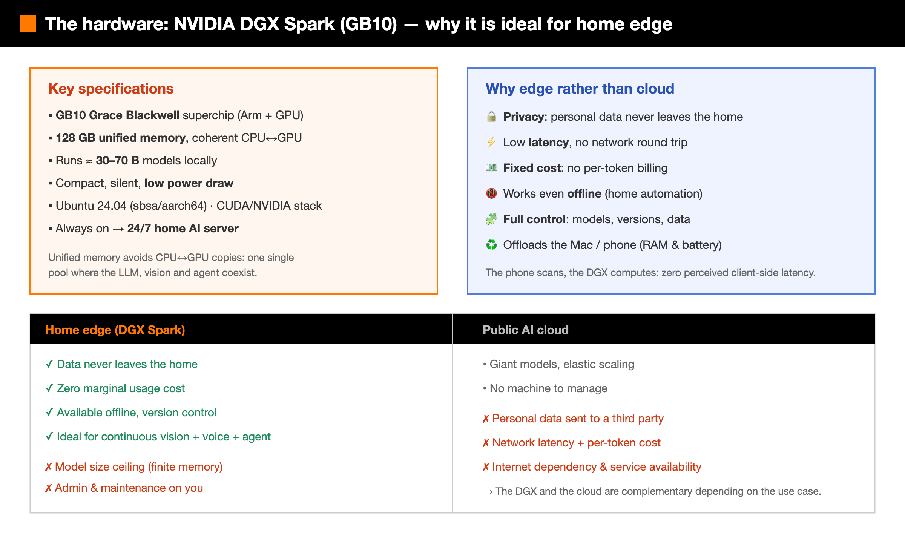
Figure 1 — The GB10 and why home edge makes sense compared to the cloud.
In practice, for home use, three properties matter more than the raw numbers: the machine is compact and silent, it draws little power, and it is always on. It effectively becomes a 24/7 home AI server: the phone and the Mac delegate the heavy lifting to it and stay light.
3. Overall architecture
Before diving into the details, here is the big picture. The DGX is at the center; around it revolve the exposure layers (public via Cloudflare, private via Tailscale), the uses (LLM, agent, home automation, perception, voice, display) and the ecosystem of devices.
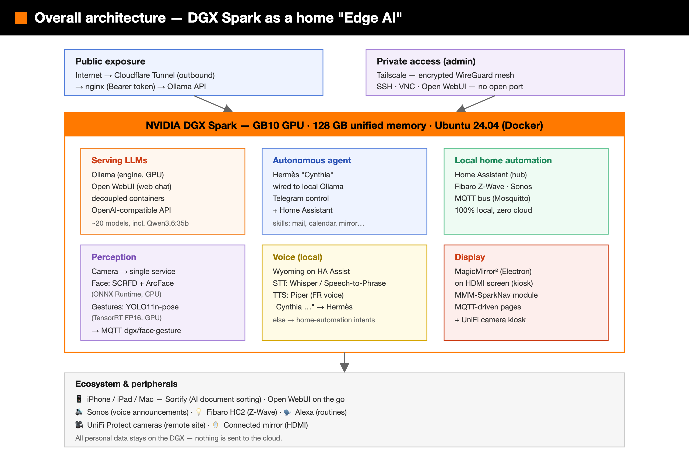
Figure 2 — The DGX Spark as home "edge AI": a single machine, several jobs.
4. Serving LLMs locally
4.1 Ollama and Open WebUI: decoupling for flexibility
The foundation is made of two well-known building blocks: Ollama (the inference engine that loads models onto the GPU) and Open WebUI (the web chat interface). The structuring choice was to run them in two separate Docker containers, rather than in the "all-in-one" image that bundles them together.
Why? For two concrete reasons:
- Decoupling updates. Ollama ships very often (new models, GPU optimizations). In the bundled image, Ollama lags behind because it is only rebuilt at Open WebUI's pace. Decoupled, you update one without touching the other.
- Exposing Ollama as an API. By isolating Ollama behind its own entry point, you can give it a domain name and use it as an OpenAI-compatible LLM API from any application — which is exactly what makes the Sortify use case possible (§7).
| Container | Role | Exposure |
|---|---|---|
| ollama | Inference engine (GPU access) | localhost only, behind nginx |
| open-webui | Web chat interface | localhost only, behind nginx |
| watchtower | Automatic updates of official images | — |
Around twenty models coexist on the machine (from a small, fast model for testing up to models of 35 to 70 billion parameters), stored on a persistent volume that survives container recreations. The main working model for document sorting is Qwen3.6:35b.
4.2 Updating the containers: automatic where it's safe, manual where it's risky
The update strategy is differentiated by risk:
- Official images with a stable interface (Ollama, Open WebUI): Watchtower checks every night whether a new image exists, downloads it and recreates the container with the same parameters. Zero intervention.
- Locally built images (the Hermès agent, §9.2): manual, supervised updates. Watchtower can't rebuild them, and above all an autonomous agent on an upstream repo that changes dozens of times a day deserves a controlled pull, not a blind one. So we set up a watch that notifies when an update exists, and a safe-apply script with automatic rollback if startup fails.
"Auto-update everything" is a false good idea. You automate what is stable and has no inbound attack surface; you keep control over what is fragile or exposed. The right update granularity is an architectural decision, not a default setting.
5. Exposing without opening a port: Cloudflare Tunnel
How do you use the Ollama API or the Open WebUI interface from outside, on the move, without
turning your Internet box into a sieve? The chosen answer: never open an inbound
port, and route the traffic through an outbound tunnel with
Cloudflare Tunnel (the cloudflared daemon).
Figure 3 — Two access paths, a single rule: no inbound port forwarding on the box.
The principle: it is the DGX that initiates the connection to the Cloudflare
network (an outbound connection, like when a browser visits a website). Cloudflare becomes the
public entry point (for example https://ollama.example.com), and sends the requests
back down through that tunnel already opened from the inside. The Internet box has no port
forwarding at all: seen from outside, there is simply nothing to attack.
Why is this safe?
- Zero inbound attack surface. No open port = no service exposed to scan or to brute-force from the Internet.
- TLS and filtering upstream. Encryption and a first anti-abuse barrier are handled by the Cloudflare network, before they even reach the house.
- Application-level authentication. Behind the tunnel, a local nginx enforces a Bearer token on the Ollama API. The secrets live on the server side, in restricted mode, never in the code or in the documentation. Only the Ollama API is exposed publicly: the Open WebUI interface itself is no longer reachable from the Internet (see §8).
Cloudflare Tunnel is a reverse proxy that terminates TLS at its edge: it is
Cloudflare that presents the certificate for ollama.example.com, so it
decrypts the request on the way in, then re-encrypts it toward the DGX. In other
words, at the Cloudflare hop, the content is in the clear — including the
prompts and, where applicable, the content of documents sent to the API. This is
not end-to-end encryption. You therefore shift part of the trust onto a third party,
just like with any CDN.
Three important clarifications to put this in perspective — and to arbitrate well:
- This concerns ONLY the traffic that goes out through the public domain. At home (LAN) or via Tailscale, the applications — including Sortify — call the DGX directly: Cloudflare is then not in the path at all.
- It's a trust model, not a vulnerability. You rely on Cloudflare's policy (not to inspect or retain the proxied content), exactly as you trust a CDN or a hosting provider. Acceptable for everyday uses, debatable for very sensitive data.
- For zero third party in the path, prefer Tailscale (§6). By reaching the Ollama API via the tailnet rather than via the public domain, the link is encrypted end-to-end (WireGuard) and Cloudflare drops out of the loop. You then reserve Cloudflare for genuinely public, non-confidential sharing.
This is also why, for administrative access (SSH, VNC), we never go through a public service: Tailscale only.
6. Private access: Tailscale, a network between my devices
To administer the DGX (and the Mac) from the iPhone or iPad from anywhere — opening an SSH session, taking control over VNC on the screen — we use Tailscale. It's a mesh VPN built on the WireGuard protocol: all my devices (iPhone, iPad, Mac, DGX) join a single encrypted private network (a "tailnet"), and talk to each other directly, as if they were on the same LAN — wherever they are physically.
As with Cloudflare, the key point is that no port is opened on the box:
each device establishes an outbound connection to the coordination service, then the peers
communicate directly through an end-to-end encrypted WireGuard tunnel. Each node receives a
stable address (in the 100.x range) that is never routed over the public Internet.
What level of trust — and what to watch out for?
The model is called "zero-trust": you don't trust the network (a hotel's Wi-Fi, 5G), but the authenticated identity of each device. It's solid, provided you know the points to watch:
| What protects you | What to stay vigilant about |
|---|---|
| WireGuard encryption (reputed robust), end-to-end. | The SSO account that drives the tailnet becomes "the key to the kingdom" → multi-factor authentication is mandatory on that account. |
| Per-device identity: an unauthorized device doesn't get in. | The coordination server (Tailscale) is a trusted third party: it orchestrates the keys (but does not see the content of the traffic). |
| Hardened SSH on top: key-based login only, password refused, user allowlist. | Disable key expiry on key nodes (otherwise you lose remote access at the worst possible moment); immediately revoke a lost device. |
| No public surface: nothing to scan from the Internet. | Keep the access rules (ACLs) as tight as possible: a device should reach only what it needs. |
Where exactly to place trust: data plane vs control plane
To properly assess the solution, you have to separate two planes — and you don't grant them the same level of trust:
- The data plane (your traffic) — you do NOT trust Tailscale here. The encryption is WireGuard end-to-end and the private keys never leave your devices: Tailscale cannot decrypt your traffic. Even when the direct peer-to-peer connection fails and the flow goes through a Tailscale DERP relay, that relay only sees opaque encrypted packets. Confidentiality therefore does not depend on trusting Tailscale — this is the major strength.
- The control plane (the coordination server) — that's where the residual trust lies. It doesn't see the content, but it distributes the public keys and the ACLs and relies on your identity provider (SSO). The theoretical risk: a compromised coordination server could inject a rogue node into the tailnet (key substitution). It is also an availability point (if it goes down, existing links hold, but adding/renewing nodes no longer works).
Good news: this residual trust can be reduced, or even eliminated:
- Tailnet Lock (native feature): new nodes must be signed by your own trusted devices — even Tailscale can then no longer add a device without your signature. It's the direct countermeasure to node injection.
- Headscale: an open-source reimplementation of the control plane, self-hostable, which takes Tailscale Inc. completely out of the loop (at the cost of operating it).
- At the extreme, bare WireGuard: no coordination server, but keys and NAT traversal to manage yourself.
Strong trust by default: end-to-end encryption, local keys, an open-source client, audited WireGuard, a vendor with a good security track record. The number one practical risk remains your SSO account (its compromise = access to the tailnet) → MFA is non-negotiable. And if you want "zero trust in the third party", you enable Tailnet Lock (quick) or move to Headscale (radical).
Cloudflare Tunnel is for exposing public services (an API, a UI) to third parties, with authentication. Tailscale is for giving yourself private administrative access to your own machines. Both share the same golden rule: you never punch a hole in the box. Together, they cover public exposure and private access without any inbound port.
7. "Sortify" use case: AI-powered document sorting
Sortify is an app (Mac, iPhone, iPad) that tackles a universal chore: paperwork. Every document that arrives — an email attachment, a scan from the printer, a file dropped in an "inbox" folder, a photo taken on the phone — is captured, analyzed by AI, then automatically indexed and filed. You scan and forget: the AI classifies and retrieves on your behalf.
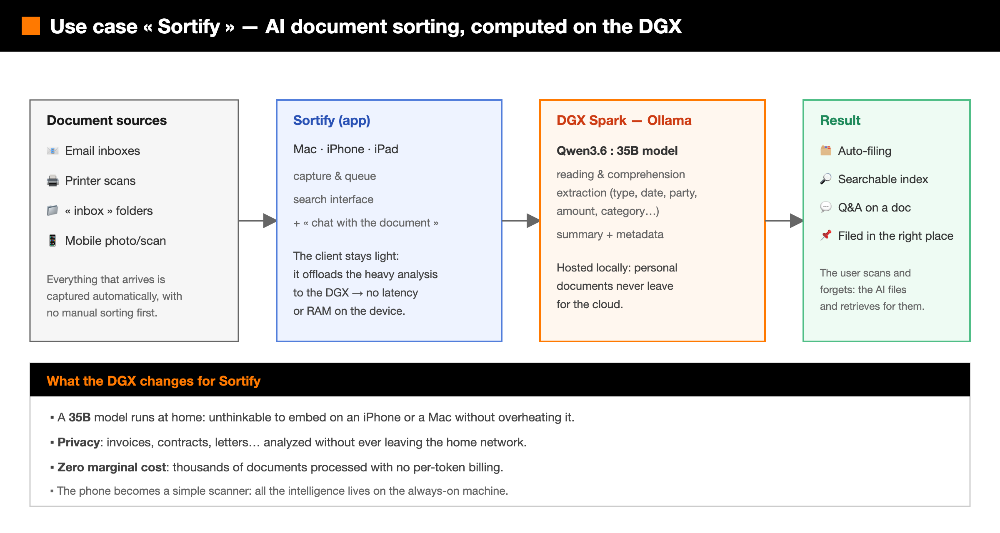
Figure 4 — From source to filing: the client captures, the DGX understands.
The central point is where the analysis happens. Documents are processed by the Qwen3.6:35b model hosted on Ollama, on the DGX Spark. The client app stays light: it captures, queues, and delegates the bulk of the work to the always-on machine. The result: you can scan a document from your phone without worrying about latency or memory — and it's the same on the Mac.
Sortify on Mac — a document analyzed, summarized and categorized.
Sortify on Mac — "chat with the document": ask a question about its content.
On iPhone — analyzing a document scanned on the move.
On iPhone — questions/answers about a document; the computation happens on the DGX.
What the DGX changes, in three points:
- A 35B model at home: unthinkable to run on an iPhone or a Mac without overheating it or draining the battery. Model size unlocks the quality of the analysis.
- Privacy: invoices, contracts, official letters… are analyzed on the DGX, never on a third-party AI service. At home (LAN) or via Tailscale, the content does not leave the home network. For remote access through the public domain, the traffic transits through Cloudflare (see the caveat in §5) — hence the value of preferring Tailscale for the most sensitive documents.
- Zero marginal cost: you process thousands of documents with no per-token billing.
8. Personal Open WebUI: a private ChatGPT-like, reachable via Tailscale
The Open WebUI interface offers a private "ChatGPT-like": the same uses as a consumer assistant — rewording a sensitive letter, analyzing a confidential document, preparing an administrative procedure — but the conversation and the attachments stay on the DGX, never on a third-party service. It's the ideal tool for everyday tasks that touch personal data.
Why we removed it from public access
Open WebUI was first exposed like the API (§5), behind the Cloudflare tunnel with basic authentication (HTTP Basic Auth) at the nginx level. On reflection, that's too weak a link for an interface giving access to personal data:
- Basic Auth has no rate limiting, no account lockout, no MFA → it is exposed to online brute-forcing and credential stuffing;
- the credentials are sent back on every request (their only protection in transit is TLS);
- security then comes down to the strength of a single password.
Rather than hardening a public entry point (adding rate limiting, or even an identity portal in front), we made the simplest and safest choice: plainly and simply removing the public exposure of Open WebUI. It is now reachable only via Tailscale (and on the local network). You reach the interface through the DGX's private address on the tailnet — the link is encrypted end-to-end (WireGuard), and there is nothing left to brute-force from the Internet. On top of that, Open WebUI keeps its own application-level authentication (accounts/login).
When a protection is structurally weak (here Basic Auth), putting it behind an authenticated private network (Tailscale) is often more robust — and simpler — than stacking band-aids on a public endpoint. You reserve public exposure (Cloudflare) for what really needs it: the Ollama API, protected by a token.
9. The home: Home Assistant & Hermès
9.1 Home Assistant, the local home-automation hub
Home Assistant runs in a container on the DGX and plays the role of a local-first (zero-cloud) home-automation hub. It aggregates the home's equipment and gives them a common language:
- the Fibaro home-automation box (Z-Wave master) stays in place; Home Assistant overlays it and exposes all the devices as entities;
- the Sonos speakers (auto-discovered) become controllable audio outputs — they are how the home "speaks";
- an MQTT message bus (a local Mosquitto broker) acts as the nervous system: this is where perception (faces, gestures, presence) publishes its events, and where the other building blocks subscribe.
Everything stays on the local network. The hub that drives the home is not exposed on the Internet: you reach it on the LAN or via Tailscale, never via a public service.
9.2 Hermès, the autonomous agent ("Cynthia")
Hermès is an autonomous agent (an open-source project by Nous Research) that runs in a container on the DGX, connected to the local LLM served by Ollama. It's the "brain" that can reason, chain tools and act. We personified it under the name Cynthia.
Today, we talk to it in two ways:
- Telegram: a private bot (with a user allowlist) lets you write to it from anywhere — "give me a weather + calendar + birthdays summary this morning", "put this info on the mirror screen"… The agent has skills (sending email, reading/writing the calendar, etc.) and an internal task scheduler.
- Home Assistant: Hermès is integrated into the hub, which lets it act on the home (announcements, devices) and be triggered by it.
For now, the interaction is via the keyboard (Telegram) or via the mirror's voice pipeline (§10.2). The goal is a dedicated audio capture — either via the Apple Watch (a wrist trigger), or via a wakeword and a microphone at the mirror — to talk to Cynthia without touching anything.
A notable security point: the agent is exposed on no inbound port. On the
Telegram side, it's the agent that reaches out to poll the servers (polling); its dashboard, which
stores keys, is bound to 127.0.0.1 and reachable only via an SSH tunnel. Here again,
nothing is open to the outside.
10. The augmented smart mirror
This is the showcase of the project: a smart mirror (a screen behind a two-way mirror) that displays the time, the weather, the calendar… but above all that sees, listens, understands and reacts. All the intelligence is hosted on the DGX.
10.1 MagicMirror² hosted on the DGX
The display relies on MagicMirror² (an open-source Electron app) that
runs in kiosk mode on the HDMI screen connected to the DGX, with automatic login at startup. We
added third-party modules (calendar, weather, memos, stocks, Fibaro home automation…) and above all a
home-made, audited module: MMM-SparkNav, which manages a set
of pages and the navigation.
For the sensitive building blocks (navigation, pages pushed by the agent), we wrote home-made modules rather than installing unverified extensions. On a machine that sees the living room and handles personal data, trust in the code that runs is a security requirement.
10.2 Local voice: speech recognition and synthesis (STT / TTS)
The voice relies on Home Assistant's "Assist" pipeline, powered by Wyoming containers that run on the DGX. The architecture distinguishes two paths depending on the intent:
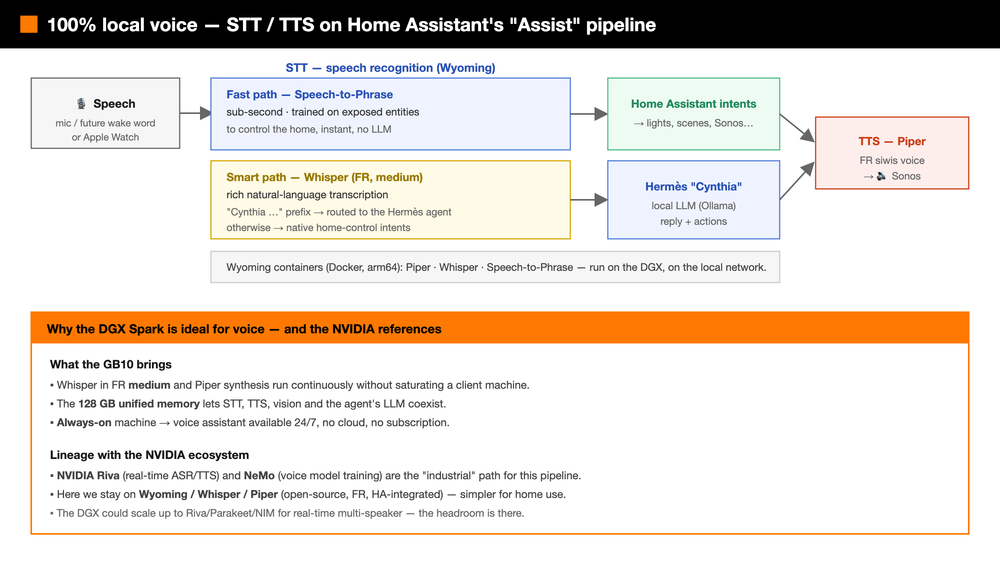
Figure 5 — Two voice paths: fast for home automation, smart for the agent.
| Path | Recognition (STT) | Use |
|---|---|---|
| Fast "commands" | Speech-to-Phrase (sub-second, trained on the home's devices) | Drive the home instantly, without calling on an LLM. |
| Smart "conversation" | Whisper (French, medium quality) | If the sentence starts with "Cynthia…" → routed to the Hermès agent; otherwise → native home-automation intents. |
The speech synthesis (TTS) is handled by Piper (French voice), and the home responds on the Sonos speakers. When the request takes a long time to process (the agent is thinking), the experience is hybrid: an immediate response if it's fast, otherwise a "on it" followed by an asynchronous delivery of the answer on Sonos.
Why the DGX — and the NVIDIA lineage
Running Whisper in French medium and Piper synthesis continuously without saturating a client machine is precisely the GB10's home turf: the unified memory lets STT, TTS, vision and the agent's LLM coexist, and the machine is available 24/7. As for the lineage, this pipeline is the "home, open-source" version of a chain that NVIDIA industrializes with Riva (real-time recognition and synthesis) and NeMo (training of voice models). We stayed on Wyoming/Whisper/Piper for simplicity and the French built into Home Assistant — but the DGX leaves the headroom to move up to Riva/Parakeet/NIM if you want real-time multi-speaker.
10.3 Facial recognition: "Hello <First name>"
A camera connected to the DGX feeds a perception service that detects and recognizes faces. Detection uses SCRFD, the facial fingerprint (a vector of 512 numbers) is produced by ArcFace, and comparison against a small local gallery gives the identity (or "unknown"). When a known face appears, a message is published on the MQTT bus, and Home Assistant announces "Hello <First name>" on the Sonos speakers.
An engineering detail that matters: this recognition runs on the CPU (via ONNX Runtime), deliberately throttled to a few frames per second. It doesn't need the GPU — which we keep free for the LLM and gesture recognition.
Facial recognition never leaves the house: no image, no fingerprint is sent to a third-party service. It's the clearest illustration of the value of the edge: this kind of processing is only acceptable strictly local.
10.4 "Minority Report"-style gesture recognition
The same perception service also does gesture recognition to drive the mirror by hand, without touching it. This time we use the GPU: a YOLO11n-pose pose model, exported to a TensorRT FP16 engine, tracks the body's joints in real time. A heuristic analyzes the wrist's trajectory (normalized by shoulder width) to recognize gestures: swipe left/right/up/down, two raised hands…
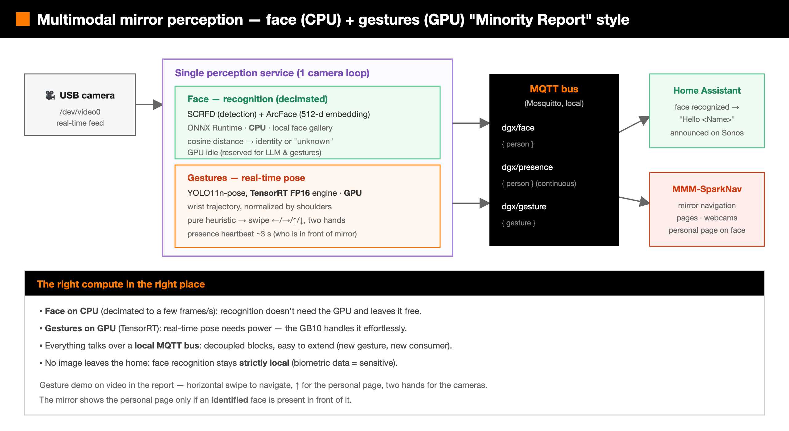
Figure 6 — The right computation in the right place: face on CPU, gestures on GPU, all on a local MQTT bus.
The gestures are published on MQTT (dgx/gesture) and consumed by the
MMM-SparkNav module of the mirror: a horizontal swipe scrolls through the ring of pages, a
swipe up shows the personal page, two raised hands open the cameras. The whole thing
gives a fluid, contactless interaction — the "Minority Report" effect.
Figure 7 — Driving the mirror with a gesture.
Video demonstration
The video below shows the user experience in real conditions: navigating between the mirror's pages with a simple hand gesture.
Video — gesture recognition on the smart mirror (playback requires an Internet connection).
Pose-based recognition is sensitive to conditions: you need to be at the right distance, standing, facing the camera, with broad gestures. And a structural pitfall remains — raising your hand to initiate a gesture looks like a real vertical swipe. The field report also means documenting what is not yet perfect: the fix path (disabling vertical swipe navigation while keeping the face auto-display and the horizontal swipes) is identified for a future iteration.
10.5 Hermès × mirror: a page driven by the agent
The mirror and the agent come together here. You can ask Cynthia (by voice or by Telegram) to generate the content of one of the mirror's screens: "put the morning summary on the Hermès screen". The agent composes an HTML page and pushes it onto the MQTT bus (a retained message) toward the target screen.
The mirror renders this HTML in a sandboxed iframe, with a strict content security policy (CSP): no script runs, no remote resource is loaded. That's the crucial security point: you display content generated by an LLM without giving it the keys to the browser. Even malicious HTML would be inert there.
The mechanism is generic: other screens in the ring are fed the same way by deterministic generators (for example a home monitoring dashboard — devices connected to the network and lights that are on — or news pages), published periodically and rendered in the same sandboxed iframe.
10.6 Contextual pages triggered by the face
The last building block, and probably the most "magical" in use: the mirror only displays a user's personal page if their face is recognized in front of it. Facial recognition (§10.3) continuously publishes a "presence heartbeat" on MQTT; the navigation module uses it to know who is there, and automatically switches to that person's content (their memos, their information), topped by the "Hello <First name>" banner.
The result is a contextual and private experience: the right content, for the right person, at the right time — and nothing is displayed if no identified person is in front of the mirror. It's the convergence of all the building blocks: perception (who is there), agent (what to display), display (how), all orchestrated locally on the DGX.
10.7 Demo — face, gestures & mirror screens
An overview of the different mirror screens/pages in action — navigation, contextual pages, content pushed by Hermès:
Video — face, gestures & mirror screens (playback requires an Internet connection).
11. Coding locally: Claude Code, OpenCode, KiloCode, Xcode
Probably the most striking use for a developer audience. Since Ollama exposes an API compatible with OpenAI and Anthropic, you plug the DGX's local code models into nearly all dev tools — open-source as well as proprietary — with no subscription and without sending a single line of code to the cloud. The DGX becomes a private copilot, at zero marginal cost, available in all your editors.
The same Ollama (on the DGX) powers OpenCode, KiloCode, Claude Code and Xcode. You change tools,
not brains. Models used here depending on the task: qwen3-coder:30b,
qwen3.5:27b, qwen3.6:35b.
11.1 OpenCode — terminal code agent (open-source)
OpenCode is configured to hit the DGX's Ollama: here the model qwen3-coder:30b-q8,
"local on DGX Spark". Nothing leaves the machine.
OpenCode — the qwen3-coder:30b-q8 model served locally by the DGX.
11.2 KiloCode
Same principle for KiloCode (code agent): the endpoint points to the DGX's Ollama.
KiloCode — the DGX's local models as the backend.
11.3 Claude Code — at the price of a small proxy hack
Claude Code (2.1.x) is more demanding: it validates the model at startup by
calling an Anthropic endpoint /v1/messages/count_tokens that Ollama does not
serve → without it, it refuses the model ("issue with the selected model"). The
workaround: a small local proxy that provides this endpoint (token counting) and
relays the rest to Ollama. Three options depending on taste:
| Option | What it is | Trade-off |
|---|---|---|
| Home-made shim (~50 lines) | answers count_tokens (estimation) + relays the rest, injects the token, killed on exit | ultra-light, zero dependency · approximate counting (no stakes given the huge context windows) |
| claude-code-router | dedicated Node proxy "Claude Code + third-party backends" | turnkey · one Node dependency |
| LiteLLM | full Python proxy (exact counting) | robust · heavier |
A home-made wrapper (claude-dgx) automates everything: it reads the token from the keychain
(Keychain), auto-detects the best path (Tailscale → LAN → Cloudflare), launches the
proxy then Claude Code, and cleans up the proxy on exit.
Launching via claude-dgx — choosing the local model.
Claude Code 2.1.179 on local qwen3.6:35b — context gauge fed by the proxy.
11.4 Demo — a 3D website, generated on the first try
To judge the quality: on the prompt "make an engaging website with 3D content", Qwen3.6:35B produced the result below on the FIRST attempt (no edits), entirely locally on the DGX.
First attempt by Qwen3.6:35B (local) — a website with 3D content.
11.5 Xcode — Ollama as a native provider
Even Apple's IDE lends itself to it: Xcode's "Coding Intelligence" accepts third-party
providers — we added "Ollama DGX Spark" alongside OpenAI, Anthropic and
a corporate LLM proxy. For the demo, a Snake game built entirely in ~1 h (all
in) with qwen3.5:27b.
Xcode — "Ollama DGX Spark" as a code provider, alongside OpenAI/Anthropic.
Snake coded in ~1 h with qwen3.5:27b (local).
A developer can work with a powerful, private and free-to-use AI assistant, integrated into their usual tools — code and secrets never leave the house. The DGX turns the home edge into an assisted-dev platform.
12. Performance & resource allocation
One question always comes up: "all of that at the same time, on a single machine, does it hold up?". The answer rests on a principle — placing each workload where it costs the least — and on a comfortable resource budget. Here is how the building blocks share the GPU, the CPU cores and the unified memory.
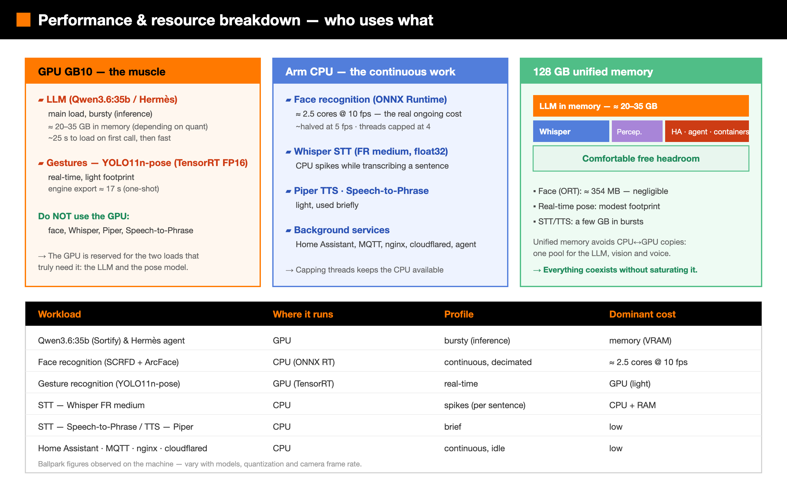
Figure 8 — The GPU / CPU / memory split between the LLM, vision, voice and background services.
12.1 Seen for real: the DGX under load
To make this split concrete, a small home-made monitor (dgx-mon) displays in real
time the CPU / GPU / unified-memory usage, the loaded Ollama models and the containers. The capture
below is a screenshot taken on an iPad connected over SSH via Tailscale (you watch
the DGX from anywhere) during an intensive inference: code generation via Claude
Code with qwen3.6:35b in "medium" effort.
You can read the loaded model (qwen3.6:35b, 100% GPU, ≈ 29 GB), the unified memory at
49/122 GiB, and above all the power consumption climbing to ~72 W (versus ~14 W at idle),
temperature rising: the GB10 is working flat out — but stays remarkably frugal
for what it crunches through.
dgx-mon from an iPad (SSH via Tailscale) — qwen3.6:35b in inference (Claude Code), ~72 W vs ~14 W at idle.
The allocation reasoning
- GPU = LLM + gestures. The GB10 GPU is reserved for the two workloads that really need it: LLM inference (Qwen3.6:35b for Sortify, and the Hermès agent's model) and real-time pose (YOLO11n-pose in TensorRT). LLM inference works in bursts (when you ask it a question), which leaves headroom for pose, which is continuous but light.
- CPU = continuous perception and voice. Facial recognition is the real permanent cost: roughly 2.5 cores at 10 frames/second (and nearly half that if you drop to 5 fps). It runs deliberately on CPU (ONNX Runtime, capped threads) so as not to steal the GPU from the LLM. Whisper (transcription) consumes in bursts during a sentence; Piper (synthesis) and Speech-to-Phrase are light.
- Unified memory = the big shared pool. The LLM takes the biggest share (on the order of 20 to 35 GB depending on the model and its quantization), Whisper and the services (Home Assistant, MQTT, nginx, cloudflared, agent) a few gigabytes, perception a modest footprint (facial recognition fits in ~350 MB). Out of 128 GB, the headroom stays comfortable — and the unified memory avoids duplicating the data between CPU and GPU.
The camera frame rate of facial recognition is the main CPU-cost knob: 10 fps gives pleasant responsiveness, 5 fps halves the load for barely less comfort. It's the kind of trade-off you adjust "on the fly" depending on what's running in parallel.
The overall lesson: it's not raw power that makes the experience fluid, it's the discipline of placement. A 35B LLM, vision on two different processors, voice and a dozen background services coexist because each was put where it gets in the way the least — and because the GB10's 128 GB of unified memory absorbs the whole.
13. Going further: the NemoClaw installation guide
This whole ecosystem first assumes a less visible step: installing and configuring the machine. I documented this journey — from bringing up the DGX Spark to the NemoClaw stack — in a dedicated guide published on my blog.
This article dates from March 2026: it isn't necessarily up to date with the latest updates published since by NVIDIA, but it gives a good sense of the implementation approach and the installation choices.
👉 Read the NemoClaw installation guide for the DGX Spark
14. DeerFlow: local deep research (exploration barely begun)
Unlike the previous building blocks (which run daily at my place), DeerFlow is only at its very first steps: installed and connected, but not yet integrated or really battle-tested. I mention it as a lead, not as an established result.
DeerFlow (open-source, by ByteDance, built on LangGraph) is a framework for multi-agent "deep research": you ask it a question, it plans the research, searches the web (DuckDuckGo), reads the sources (Jina) and synthesizes a structured report — with a sandbox to manipulate files. It's the open-source equivalent of a "Deep Research".
On the DGX, it runs in containers and is connected to the local LLM (Ollama,
nemotron-3-super): the reasoning stays at home, only the search queries
go out (public data). The interface is deliberately private — reachable on
loopback via an SSH tunnel, never exposed. The lead to dig into: a personal deep
research assistant, whose reasoning is 100% local. To be continued.
15. Takeaways & outlook
At the end of this journey, the DGX Spark turned out to be far more than a model server: a foundation for home "edge AI" on which an LLM service, an autonomous agent, a home-automation hub, computer vision and speech synthesis stacked up without getting in each other's way.
What the DGX makes possible
- Privacy as a foundation, not as an option. Documents, conversations, faces, the sound of the living room: everything is processed locally. It's the only acceptable framework for such intimate data.
- The coexistence of workloads. 128 GB of unified memory + a capable GPU: a 35B LLM, GPU and CPU vision, voice… run together, continuously.
- The right computation in the right place. Face on CPU, gestures on GPU, LLM on GPU: you distribute so that each building block has what it needs, without starvation.
- Zero open port. Cloudflare (public) + Tailscale (private) cover all remote access without ever punching a hole in the box.
The limits & things to watch
- Model-size ceiling: memory is finite; beyond a certain size, the cloud remains relevant.
- Administration on your shoulders: updates, backups, configuration pitfalls — a home-grown project requires maintenance (and many lessons learned along the way).
- Residual trusted third parties: Cloudflare and the Tailscale coordination service remain in the connectivity loop — to be weighed consciously.
- Robustness of perception: gesture recognition depends on conditions and remains perfectible.
And what's next
- Hands-free voice for Cynthia (Apple Watch or wakeword + mic at the mirror).
- Moving up a tier on voice (Riva/NIM) if you want real-time multi-speaker.
- Refining gesture recognition and enriching the gesture vocabulary.
- Extending the contextual pages and the agent × home automations.
The DGX Spark turns a home into a private, agentic AI platform: powerful enough to run the models, vision and voice continuously; frugal and silent enough to live in a living room; and local enough that no personal data ever needs to leave it.